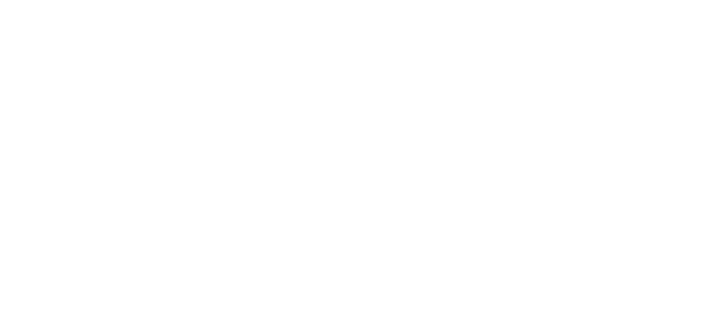
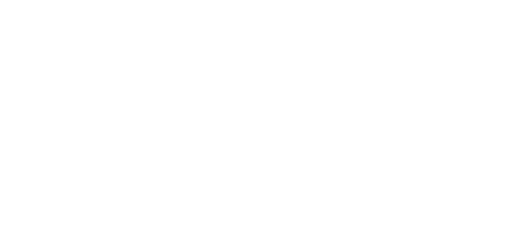

Viewfinder - Corporation Website
WEB DESUGN | DEVELOPMENT


Viewfinder -
An eye for inspiration
An eye for inspiration
What we
have done.
have done.
- Concept
- UI/UX Design
- Website development
Our
Goals.
Goals.
In the world of creativity, staying static means letting others overtake. Viewfinder, one of the first names called out when it comes to Vietnamese production houses, acknowledged the fact and required a transformation in their brand image to keep up with the art movement, creating a more future-facing version of themselves.
Our
Solutions.
Solutions.
Mpire was asked to help them create a new website with a contemporary look, adapting the new brand guideline which was also built by Mpire team.
By spending time with Viewfinder to understand their needs, we came up with a website idea that reflects their brand values the most. As people know Viewfinder for their eye catching TVCs and ad videos with cool stories behind, the website we offered was designed to allow those artworks to get easily noticed by their current and potential clients.
By spending time with Viewfinder to understand their needs, we came up with a website idea that reflects their brand values the most. As people know Viewfinder for their eye catching TVCs and ad videos with cool stories behind, the website we offered was designed to allow those artworks to get easily noticed by their current and potential clients.
 

A production house that is moving forward.
Over the past years, Viewfinder staves have been continuously keeping improving their service through every single day to become one of the top production houses in Vietnam.
To maintain their top position, Viewfinder has taken the advantage to deliver an appealing website, which the importance of was overlooked by their competitors, to present all the best to their clients and partners.
To maintain their top position, Viewfinder has taken the advantage to deliver an appealing website, which the importance of was overlooked by their competitors, to present all the best to their clients and partners.
A website that produces enjoyment.
Over the past years, Viewfinder staves have been continuously keeping improving their service through every single day to become one of the top production houses in Vietnam.
To maintain their top position, Viewfinder has taken the advantage to deliver an appealing website, which the importance of was overlooked by their competitors, to present all the best to their clients and partners.
To maintain their top position, Viewfinder has taken the advantage to deliver an appealing website, which the importance of was overlooked by their competitors, to present all the best to their clients and partners.
Results that encourage us.
After a couple of months working together, both Mpire and Viewfinder are pleased with their brainchild - Viewfinder's new corporate website. Built upon the insight given by the owner and the technology-aided expertise from Mpire team, the website has been doing a great job of establishing a credible and professional image of the production house.
Creative Director
Sang Phan
Technical Director
Tri Nguyen
Account Manager
Nathalie Phan
UI/UX Designer
Tien Thach
Senior Developer
Tien Thach